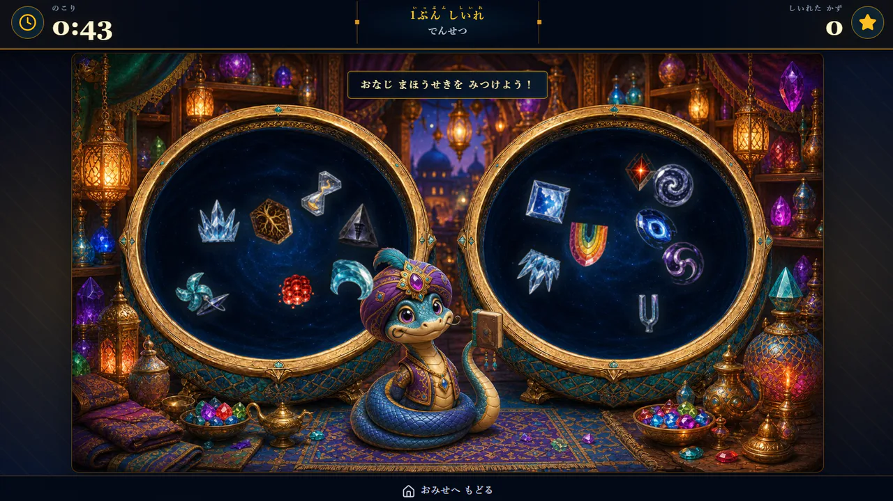
見つける・覚える・目で追う・見比べる
見ることを使う
無料ゲーム
画面の中から対象を見つける、色や位置を覚える、動きを目で追う、形や向きを見分ける、複数のものを見比べる。ここでは、ゲーム中に実際に行うことから選べます。
これらはゲーム内容の説明であり、能力の向上や特定の効果・改善を保証するものではありません。また、本サイトでは各ゲームをビジョントレーニング®として提供していません。
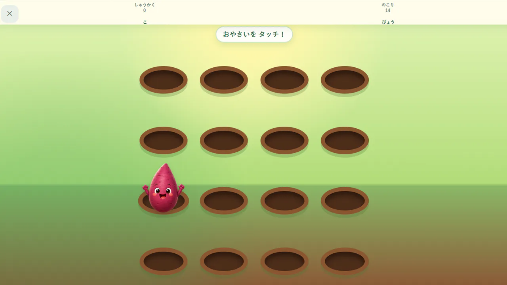
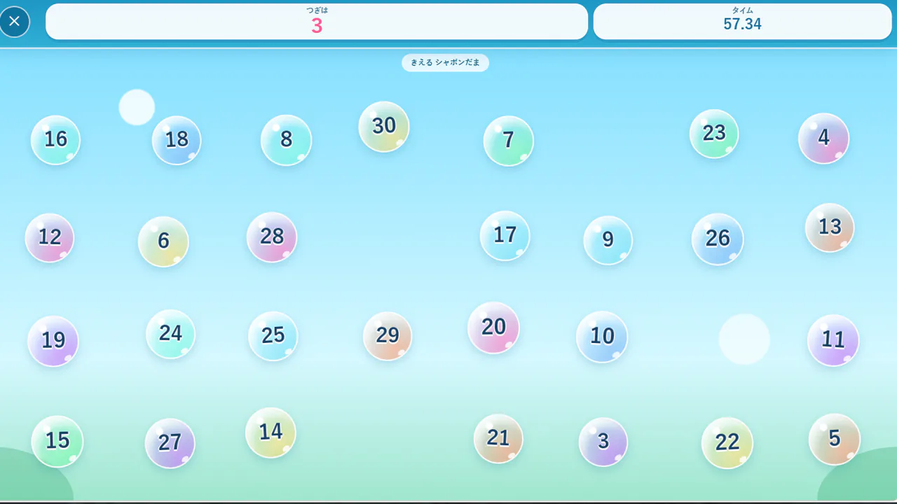
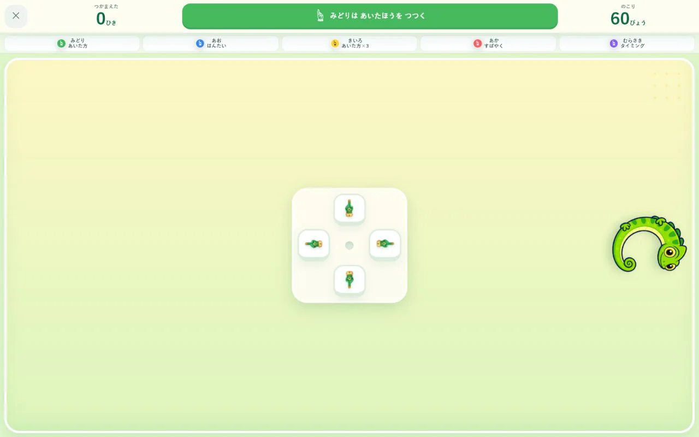


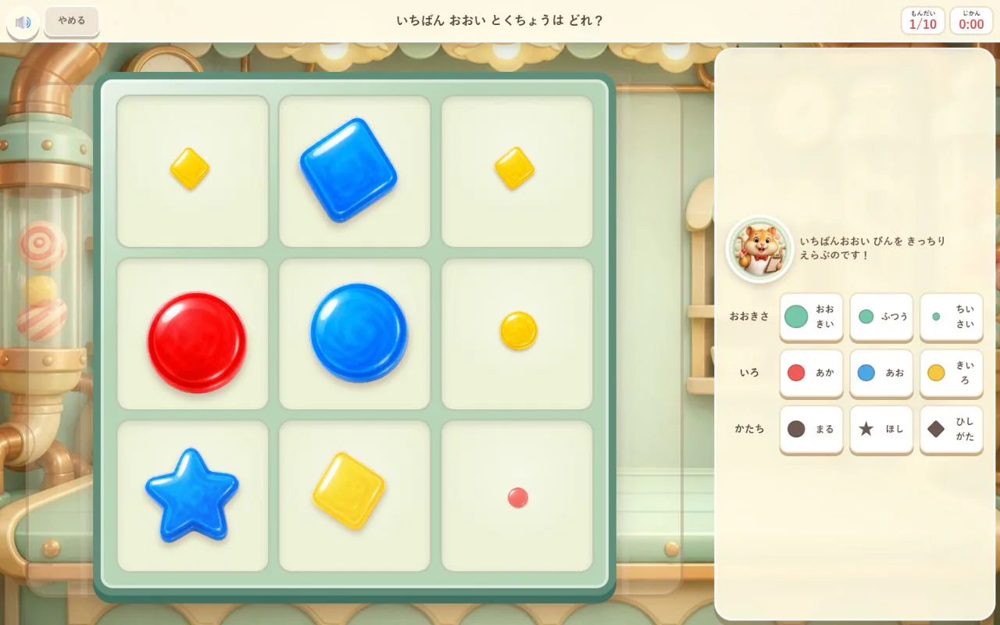
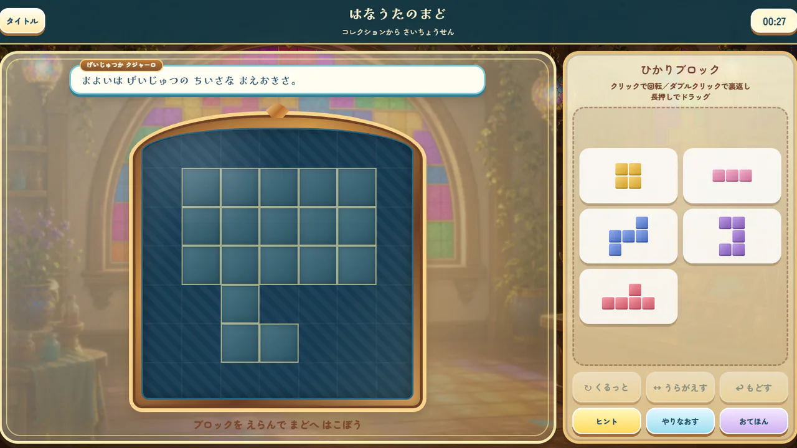
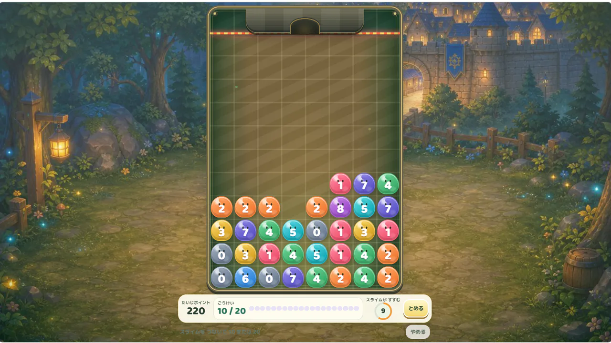

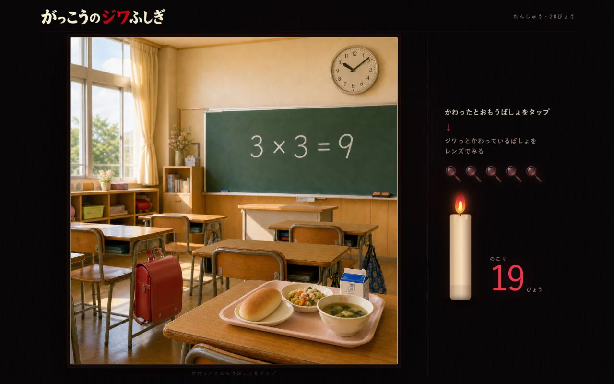
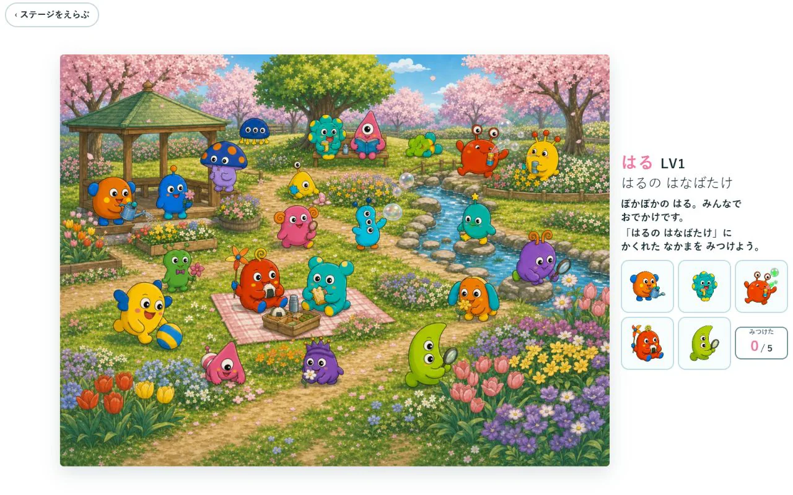
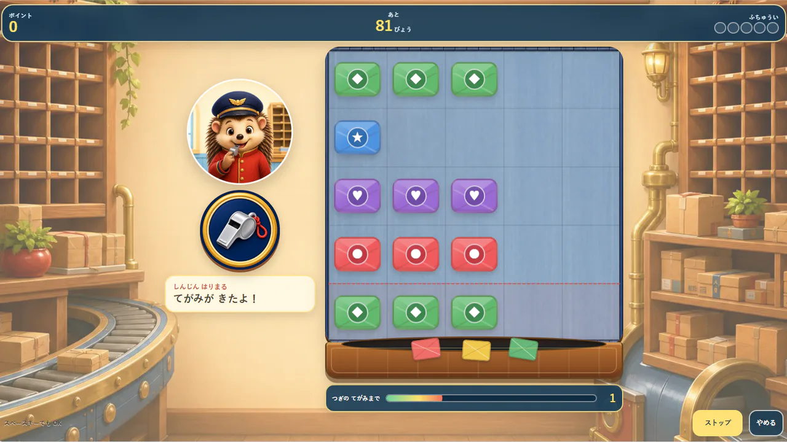
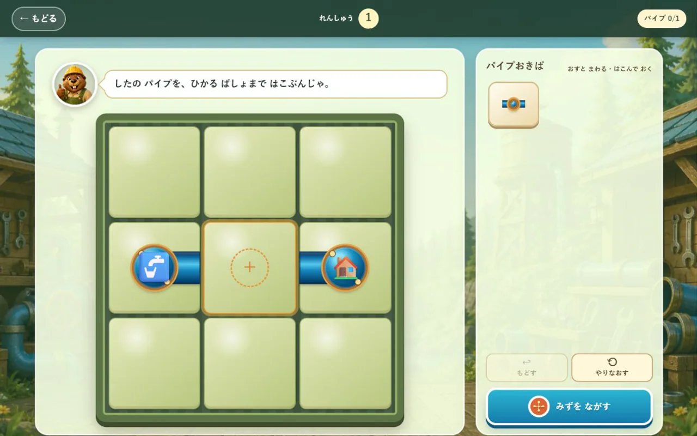
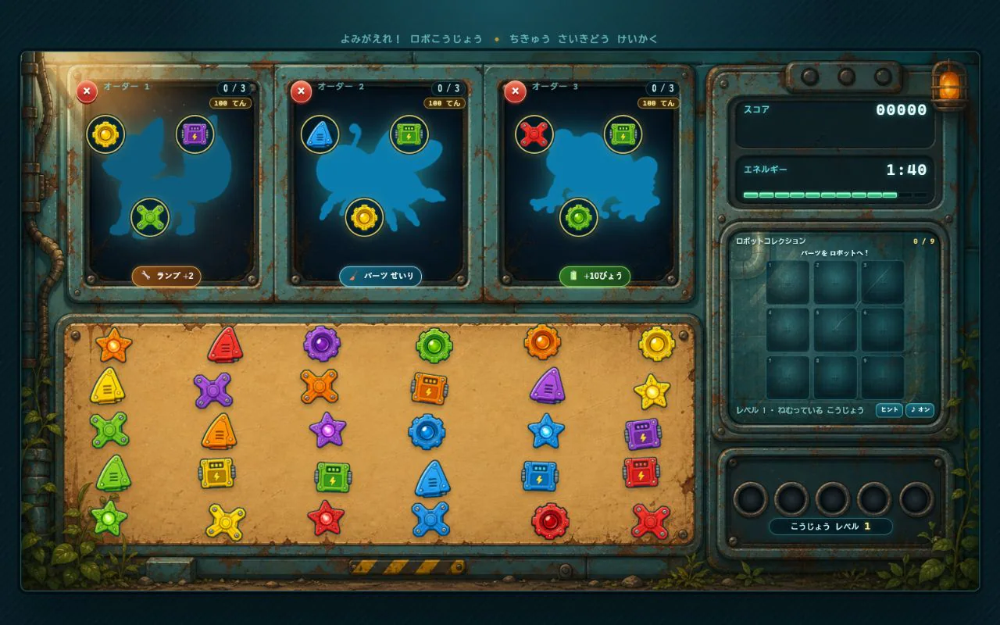